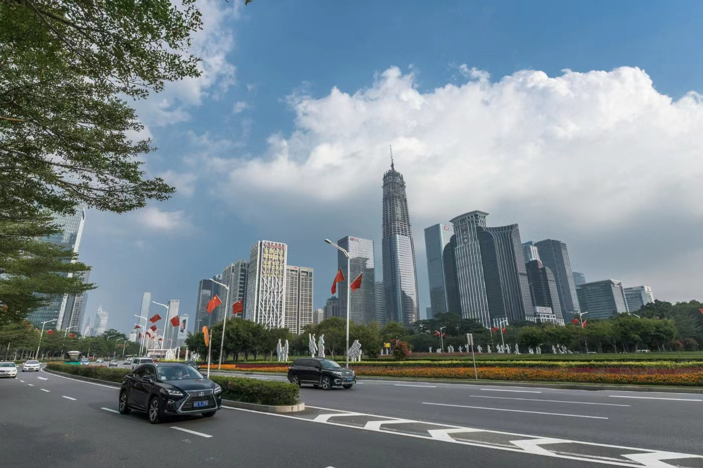

ShenZhen,China
Shenzhen is one of the four major first-tier cities in China. Since Shenzhen’s reform and opening up 40 years ago, Shenzhen’s development speed is obvious to all. From a small fishing village 40 years ago, it has developed into an international metropolis, and it has undergone earth-shaking changes. Shenzhen is a young city and a city of young people, full of youthful atmosphere; Shenzhen accommodates young people from all over the country, who have worked hard on this land to realize their dreams in life. At the same time, it also attracts investors from all over the world to invest in Shenzhen, making Shenzhen's product technology, management level, and national taxation the most prosperous period. Shenzhen is the capital of entrepreneurship. It can also be said that Shenzhen is the best entrepreneurial city in the country. Shenzhen not only gave birth to famous enterprises like Tencent and Huawei, but also gave birth to many entrepreneurs of small and medium-sized private enterprises. A city developed by Hong Kong’s geographical advantages, that is to say, without Hong Kong, there would be no current Shenzhen. Shenzhen is now a brand new city. Not only is technology all over the country and the world, but also intelligent creation is quietly on the land of Shenzhen. It will surely become a city with modern technology and beautiful environment in the future.
